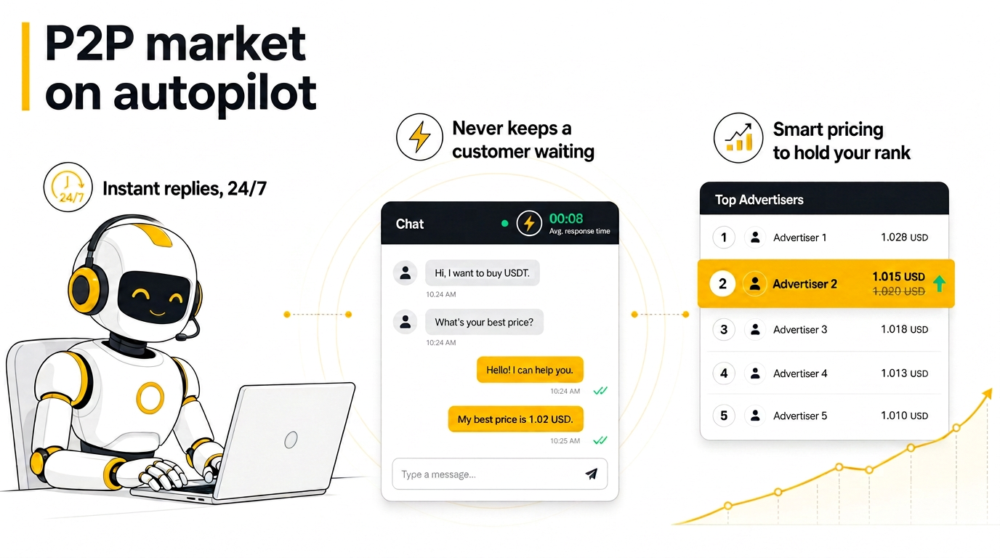

AutoTrade P2P
AutoTrade P2P💬
Answers the chat for you
Answers the chat for you
AutoTrade P2P answers the chat of your orders, keeps your customer records in order and turns months of trading into a spreadsheet your accountant can actually use. It runs on your own PC — there is no account to create and no server in the middle.
⏳ Currently in Microsoft Store review. The download link goes live the moment it is approved.

What it does
Not a bot that trades for you. A desk assistant that handles the repetitive part and leaves every decision to you.
Answers the chat for you
Keeps a real order history
Defends your rank
How it works
No account to create on our side.
From Microsoft Store, on Windows 10 or 11.
Create it in your own Binance account.
Adjust the ready-made templates or write your own.
Nothing runs until you switch it on.
You stay in control
This is the part most people ask about first.
Pricing
Billed by Microsoft through the Store.
FAQ
No.
No.
No.
Yes.
Eight.
Suggestions section in the app.